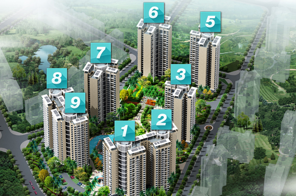

集团简介
三亚泰坤房地产开发有限公司，创始于1999年，注册资金为人民币6000万元，主要经营房地产开发与经营。历经了12年的发展，泰坤房地产一直坚持着“为业主打造优质的生活”为理念，成功的独立或参与开发了：三亚鹭园公寓。也成功建设了科兴园（春光路18号），汇丰国际一期，银龙苑（老公安局），新公安局办公大楼，及金鸡岭丽苑等多个项目的开发与建设。一直秉承着优良的质量，完善的服务赢得了业主和社会各界人士的好评，确立了泰坤地产在三亚的良好口碑与形象。
施工单位是正太集团有限公司，注册资金3.06亿元，拥有各类在册员工5800多名，在行业内率先通过了ISO9001质量管理体系、ISO14001环境管理体系、GB/T28001职业健康安全管理体系认证。在建筑施工领域，公司拥有广泛的社会影响力和综合竞争力，拥有房屋建筑施工总承包特级资质，市政公用工程、装修装饰工程、机电设备安装、钢结构工程、消防设施工程五个一级资质 ，公路工程、桥梁工程等二级资质，建筑幕墙工程等三级资质。拥有对外经营签约权，具备综合承担土木结构、桩基工程、装修装饰、市政路桥、工业设备安装、以及水利、园林、防水防腐等各类工程的施工能力，经营地域覆盖全国20多个省、市，及东南亚和国际市场。长期以来公司大力实施“集约化、专业化、国际化”发展战略，秉承“诚信务实、开拓创新、以人为本、追求卓越”的企业精神和“质量立业、市场拓业、科技兴业、精诚创业”的经营理念，先后建造了一批以“鲁班奖”工程为代表的高等级优质工程，积聚了一支以教授级高级工程师为代表的高技术人才队伍，创造了一批以行业标准为代表的高科技发展策成果，建立了一套符合现代企业发展需要且与国际接轨的高水平管理体系。
施工单位是正太集团有限公司，注册资金3.06亿元，拥有各类在册员工5800多名，在行业内率先通过了ISO9001质量管理体系、ISO14001环境管理体系、GB/T28001职业健康安全管理体系认证。在建筑施工领域，公司拥有广泛的社会影响力和综合竞争力，拥有房屋建筑施工总承包特级资质，市政公用工程、装修装饰工程、机电设备安装、钢结构工程、消防设施工程五个一级资质 ，公路工程、桥梁工程等二级资质，建筑幕墙工程等三级资质。拥有对外经营签约权，具备综合承担土木结构、桩基工程、装修装饰、市政路桥、工业设备安装、以及水利、园林、防水防腐等各类工程的施工能力，经营地域覆盖全国20多个省、市，及东南亚和国际市场。长期以来公司大力实施“集约化、专业化、国际化”发展战略，秉承“诚信务实、开拓创新、以人为本、追求卓越”的企业精神和“质量立业、市场拓业、科技兴业、精诚创业”的经营理念，先后建造了一批以“鲁班奖”工程为代表的高等级优质工程，积聚了一支以教授级高级工程师为代表的高技术人才队伍，创造了一批以行业标准为代表的高科技发展策成果，建立了一套符合现代企业发展需要且与国际接轨的高水平管理体系。
集团简介

项目总占地53亩，建筑面积10万平方米。建筑密度只有13%，绿化率高达60.1%，是三亚市去少有的低密度高绿化的高档纯住宅小区，没有任何的裙楼商业，保证了纯住宅的安静舒适性。项目在道路上实行人车分流的设计，分行人主入口和车行入口，地下是一个连成一片的大型停车场，可以从每栋楼的电梯到达地下停车场，地上地下一共629个停车位，地上70个，地下559个。
项目主体由8栋23层公寓围合而成，共1200户，整体分两期开发，一期为1#、2#、8#、9#；现已全部交付使用。二期为3#，5#，6#和7#。预计在2015年5月31日即可交房。
建筑风格为热带滨海城市最适合的东南亚风格，并且精心打造了全五星级精装修标准，即外立面、架空层、公共走廊、室内装修都是五星级装修标准，特别值得一提的是项目的外立面，开发商为将项目品质彰显极致追求完更是美不惜重金采用的是成本较高的三色瓷砖贴合，不仅外观精美，而且具有较强的耐脏耐腐蚀性，更高的起到隔热效果，真正的为业主考虑。
集团简介
项目位于凤凰路与河东路之间的三亚中心轴区，交通非常便利，凤凰路往北15到20分钟即可到达火车站和凤凰机场，凤凰路往南可以做旅游大巴到达大东海和亚龙湾等旅游景点。另外我们南面新风路对面即将开辟一条隧道，可以直达亚龙湾，届时去往亚龙湾仅需20分钟，去往海棠湾也仅需30分钟，比原先的道路省去8公里的路程。往西坐公交10分钟可以到达繁华的解放路步行街。交通上可谓四通八达。
除了便捷的交通之外，三亚中心轴区作为三亚市最核心的区域，这里汇聚了集行政，休闲，文化，娱乐为一体的各种配套设施。
一山、双河、三公园的生态资源。
一山指的是东面免费开放的临春岭森林公园，现已开业，占地2800亩，海拔195.6米，山上设有登山栈道，瞭望塔，休闲茶吧等娱乐设施，从小区到公园只需100米左右的路程。
双河指的是三亚市内的两条主要河流临春河和三亚河位于项目西面，两条河流像两条长龙卧立在项目西面，风水的角度上我们称为“潜龙游水”,表示我们这一带是个风水宝地，藏风聚财。
三公园指的是西面的丰兴隆桥头公园和东面的白鹭公园以及刚才介绍过的临春岭公园。丰兴隆桥头公园是三亚著名的红树林景区，经常有国家二级保护动物白鹭栖息在那里，距离我们仅有500米，您可以在那里领略最生态的自然风景；白鹭公园是现在三亚最成熟的公园，中心有个湖叫白鹭湖，同样因为优越的生态环境吸引了许多白鹭栖息于此。
除了便捷的交通之外，三亚中心轴区作为三亚市最核心的区域，这里汇聚了集行政，休闲，文化，娱乐为一体的各种配套设施。
一山、双河、三公园的生态资源。
一山指的是东面免费开放的临春岭森林公园，现已开业，占地2800亩，海拔195.6米，山上设有登山栈道，瞭望塔，休闲茶吧等娱乐设施，从小区到公园只需100米左右的路程。
双河指的是三亚市内的两条主要河流临春河和三亚河位于项目西面，两条河流像两条长龙卧立在项目西面，风水的角度上我们称为“潜龙游水”,表示我们这一带是个风水宝地，藏风聚财。
三公园指的是西面的丰兴隆桥头公园和东面的白鹭公园以及刚才介绍过的临春岭公园。丰兴隆桥头公园是三亚著名的红树林景区，经常有国家二级保护动物白鹭栖息在那里，距离我们仅有500米，您可以在那里领略最生态的自然风景；白鹭公园是现在三亚最成熟的公园，中心有个湖叫白鹭湖，同样因为优越的生态环境吸引了许多白鹭栖息于此。